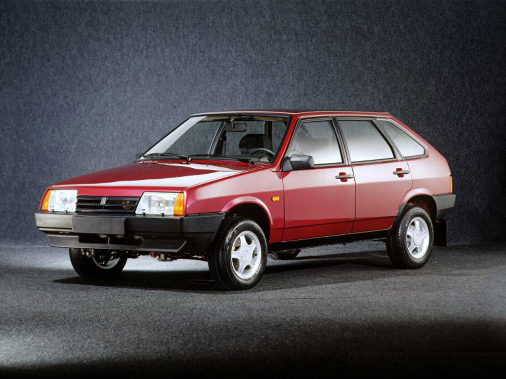

-
Категория: Легковые автомобили
ВАЗ-1111(Ока)
Советский и российский легковой автомобиль I группы особо малого класса. Автомобиль был разработан на Волжском автомобильном заводе, выпускался на ВАЗе, ЗМА и СеАЗе в 1988-2008 годах. Выпущено 700 тысяч машин со всех заводов.
-
Категория: Легковые автомобили

ВАЗ-2106
Советский и российский заднеприводный автомобиль III группы малого класса с кузовом типа седан, являющийся модернизацией ВАЗ-2103 и выпускавшийся Волжским автомобильным заводом с 1976 по 2001 год. В 1998 году производство было частично перенесено на предприятие «Рослада» в Сызрани, в 2001 году - на Анто-Рус в Херсоне, а в 2002 году - на завод «ИжАвто» в Ижевске, где и продолжалось вплоть до снятия модели с конвейера до 2006 года. Один из самых массовых и популярных автомобилей в истории СССР, России и СНГ - всего произведено и собрано на разных заводах свыше 4,3 млн штук.
-
Категория: Легковые автомобили
ВАЗ-2109
Советский и российский переднеприводный автомобиль II группы малого класса с кузовом типа хэтчбек. Разработан и серийно выпускался на Волжском автомобильном заводе в 1987-2004 годах. С 2004 до конца 2011 года вариант ВАЗ-21093 собирался
-
Категория: Легковые автомобили
ВАЗ-2114
Пятидверный хэтчбек Волжского автомобильного завода, рестайлинговая версия ВАЗ-2109, продолжение семейства под условным названием «Самара-2». Модель отличалась от предшественников оригинальным оформлением передней части кузова с новыми фарами, капотом, облицовкой радиатора, бамперами и наличием молдингов.
-
Категория: Легковые автомобили
ГАЗ-3102(Волга)
Советский и российский автомобиль среднего класса, выпускавшийся с 1981 по 2008 годы. Горьковским автомобильным заводом. Является модернизацией и глубоким рестайлингом кузова поколения ГАЗ-24.
-
Категория: Легковые автомобили
ГАЗ-31005(Волга)
ГАЗ-31105 "Волга" - автомобиль, выпускавшийся Горьковским автомобильным заводом (ГАЗ, Горьковский автомобильный завод) с 2004 по 2009 год как поколение марки "Волга". ГАЗ-31105 был вторым этапом модернизации ГАЗ-3110, хотя обозначение применялось к автомобилям, выпускавшимся с января 2004 года, механические характеристики были введены почти годом ранее, а некоторые внешние были доступны отдельными партиями в качестве стандартных или дополнительных в других.
-
Категория: Легковые автомобили
Лада Гранта
Семейство переименованных моделей российских переднеприводных автомобилей малого класса Волжского автомобильного завода, ранее носивших название «Лада Калина», выпускаемых с 2011 г. Первоначально семейство состояло из упрощённого, удешевлённого, отделённого от семейства «Калина» кузова типа седан и созданного на его основе кузова лифтбек, а с 2018 года - также включает в себя все остальные типы кузовов семейства «Калина». Выпуск начался 16 мая 2011 года, продажи - в конце декабря 2011 года.
-
Категория: Легковые автомобили
Лада Веста
Семейство российских автомобилей малого класса, выпускаемых АвтоВАЗом с 25 сентября 2015 года в кузове седан, и с 2017 года в кузове универсал. Заменило семейство LADA Priora в модельной линейке. Представляет собой пятое поколение легковых автомобилей ВАЗ. Старт продаж Vesta состоялся 25 ноября 2015 года. Самый продаваемый автомобиль в России в 2018 и 2021 годах.